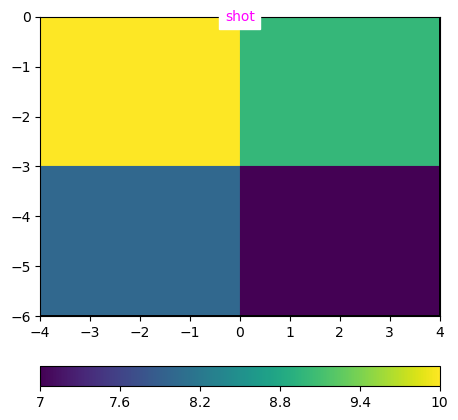
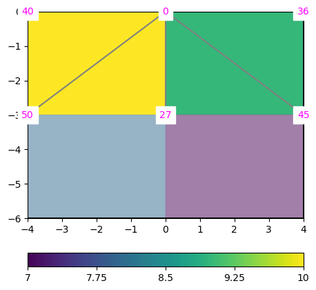
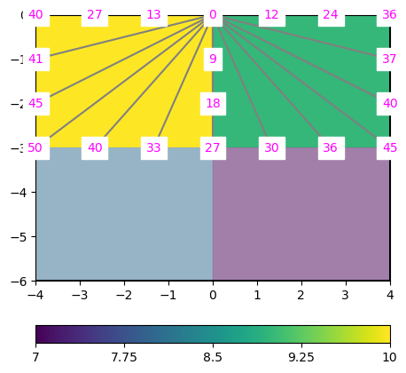
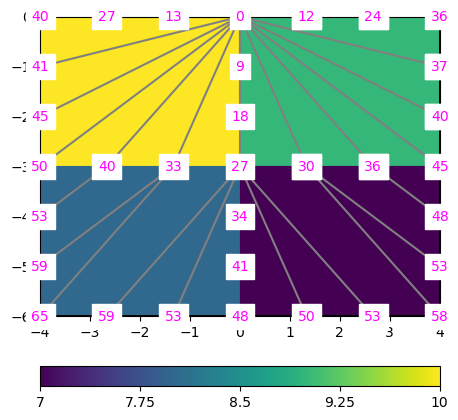

3 Numerical Simulation Methods in Geophysics, Part 2: Finite Differences
1. MGPY+MGIN, 3. MDRS+MGEX-CMG
4 Some mathematical background
4.1 Differential operators
single derivative in space \(\pdv{x}\) or time \(\pdv t\)
gradient \(\grad=(\pdv x, \pdv y, \pdv z)^T\)
divergence \(\div \vb F = \pdv{F_x}{x} + \pdv{F_y}{y} + \pdv{F_z}{z}\)
Gauss’: what’s in (volume) comes out (surface) \[\int_V \div\vb F\ dV = \iint_S \vb F \vdot \vb n\ dS\]

4.2 Curl (rotation)
- curl \(\curl \vb F = (\pdv{F_z}{y}-\pdv{F_y}{z}, \pdv{F_x}{z}-\pdv{F_z}{x}, \pdv{F_y}{x}-\pdv{F_x}{y})^T\)
Stoke: what goes around comes around \[\int_S \curl \vb F \vdot \vb dS = \iint_S \vb F \vdot \vb dl\]

- curls have no divergence: \(\div (\curl \vb F)=0\)
- potential fields have no curl \(\curl (\grad u)=0\)
5 Numerical simulation
5.1 Partial differential equations (PDEs)
Mostly: solution of PDEs for either scalar (potentials) or vectorial (fields) quantities
PDE Types (\(u\)-function, \(f\)-source, \(a\)/\(c\)-parameter):
- elliptic PDE: \(\nabla^2 u=f\)
- parabolic PDE \(\nabla^2 u - a \frac{\partial u}{\partial t}=f\)
- hyperbolic \(\nabla^2 u - c^2 \frac{\partial^2 u}{\partial t^2}=f\) (plus diffusive term) \[\frac{\partial^2\ u}{{\partial x}^2} - c^2\frac{\partial^2 u}{\partial t^2} = 0\]
- coupled \(\nabla\cdot u=f\) & \(u = K \nabla p=0\) (Darcy flow)
- nonlinear \((\nabla u)^2=s^2\) (Eikonal equation)
5.2 Poisson equation
potential field \(u\) generates field \(\vec{F}=-\nabla u\)
causes some flow \(\vec{j}=a \vec{F}\)
\(a\) is some sort of conductivity (electric, hydraulic, thermal)
continuity of flow: divergence of total current \(\vb j + \vb j_s\) is zero
\[ \div (a \nabla u) = - \div \vb j_s \]
5.3 Darcy’s law
volumetric flow rate \(Q\) caused by gradient of pressure \(p\)
\[ Q = \frac{k A}{\mu L} \Delta p \]
\[\vb q = -\frac{k}{\mu} \nabla p \]
\[\div\vb q = -\div (k/\mu \grad p) = 0\]

5.4 The heat equation in 1D
sought: Temperature \(T\) as a function of space and time
heat flux density \(\vb q = \lambda\grad T\)
\(q\) in W/m², \(\lambda\) - heat conductivity/diffusivity in W/(m.K)
Fourier’s law: \(\pdv{T}{t} - a \nabla^2 T = s\) (\(s\) - heat source)
temperature conduction \(a=\frac{\lambda}{\rho c}\) (\(\rho\) - density, \(c\) - heat capacity)
5.6 Maxwell’s equations
- Faraday’s law: currents & varying electric fields \(\Rightarrow\) magnetic field \[ \curl \vb H = \pdv{\vb D}{t} + \vb j \]
- Ampere’s law: time-varying magnetic fields induce electric field \[ \curl\vb E = -\pdv{\vb B}{t}\]
- \(\div\vb D = \varrho\) (charge \(\Rightarrow\)), \(\div\vb B = 0\) (no magnetic charge)
- material laws \(\vb D = \epsilon \vb E\) and \(\vec B = \mu \vb H\)
5.7 Helmholtz equations
\[ \nabla^2 \vb F + k^2 \vb F = f \]
results from wavenumber decomposition of diffusion or wave equations
approach: \(\vb F = \vb{F_0}e^{\imath\omega t} \quad\Rightarrow\quad \pdv{\vb F}{t}=\imath\omega\vb F \quad\Rightarrow\quad \pdv[2]{\vb F}{t}=-\omega^2\vb F\)
\[ \nabla^2 \vb F - a \nabla_t \vb F - c^2 \nabla^2_t \vb F = 0 \]
\[ \Rightarrow \nabla^2\vb F - a\imath\omega\vb F + c^2 \omega^2\vb F = 0 \]
5.8 The Eikonal equation
Describes first-arrival times \(t\) as a function of velocity (\(v\)) or slowness (\(s\))
\[ |\grad t| = s = 1/v \]





6 The Finite Difference Method (FDM)
6.1 Taylor expansion
Assume the Poisson equation \[\div(a\grad u)=f\]
Taylor expansion \[f(x)=f(x_0)+f'(x0)(x-x_0)+f''(x_0)(x-x_0)^2/2\]
6.2 Finite differences
and solution \(u\) by finite values \(u_i\) at points \(x_i\), e.g. \[ \dv*{u}{x}_{2.5} := (u_3-u_2) / (x_3-x_2) \]
\[\pdv[2]{u_3}{x}\approx \frac{\dv*{u}{x}_{3.5}-\dv*{u}{x}_{2.5}}{(x_4-x_2)/2} = \frac{(u_4-u_3)/(x_4-x_3)-(u_3-u_2)/(x_3-x_2)}{(x_4-x_2)/2} \]
6.3 Difference stencil
Assumption: equidistant discretization \(\Delta x\), conductivity 1
1st derivative: \([-1, +1] / dx\), 2nd derivative \([+1, -2, +1] / dx^2\)
Matrix-Vector product \(\vb{A}\cdot\vb{u}=\vb{f}\) with
\[ \vb{A} = \begin{bmatrix} +1 & -2 & +1 & 0 & \ldots & & \\ 0 & +1 & -2 & +1 & 0 & \ldots & \\ \vdots & \vdots & \vdots & \ddots & \vdots & \\ \ldots & \ldots & 0 & +1 & -2 & +1 \end{bmatrix} \]
6.4 FDM on the general Poisson equation
Assume the Poisson equation \[\div(a\grad u)=f\]
\[ \pdv{(a \dv*{u})}{z} = a\pdv[2]{u}{z} + \pdv{a}{z} \pdv{u}{z} \]
6.5 Boundary conditions
Dirichlet conditions: \(u_0=u_B\) (homogeneous if 0)
Neumann conditions (homogeneous if 0) \[ \pdv*{u}{x}_0=g_B \]
Mixed boundary conditions \(u_0+\alpha du_0/dx=\gamma\)
6.6 Dirichlet BC implementation way 1
\(u_0 = u_B\)
\[ \begin{bmatrix} +1 & 0 & 0 & \ldots & & \\ +1 & -2 & +1 & 0 & \ldots & \\ \vdots & \vdots & \ddots & \vdots & \\ \ldots & \ldots & 0 & +1 & -2 & +1 \end{bmatrix} \cdot\vb{u} = \begin{bmatrix} u_B\\ f_1 \\ \vdots \\ f_N \end{bmatrix} \]
6.7 Dirichlet BC implementation way 2
\(u_B - 2 u_1 + u_3 = f_1\)
\[ \begin{bmatrix} -2 & +1 & 0 & \ldots & & \\ +1 & -2 & +1 & 0 & \ldots & \\ \vdots & \vdots & \ddots & \vdots & \\ \ldots & 0 & +1 & -2 & +1 \end{bmatrix} \cdot\vb{u} = \begin{bmatrix} f_1 - u_B\\ f_2 \\ \vdots \\ f_N \end{bmatrix} \]
6.8 Neumann BC implementation way 1
\[ u_1 - u_0 = g_B\]
\[ \begin{bmatrix} -1 & +1 & 0 & \ldots & & \\ +1 & -2 & +1 & 0 & \ldots & \\ \vdots & \vdots & \vdots & \ddots & \vdots \\ \ldots & \ldots & +1 & -2 & +1 \end{bmatrix} \cdot\vb{u} = \begin{bmatrix} f_0+g_B\\ f_1 \\ \vdots \\ f_N \end{bmatrix} \]
6.9 Neumann BC implementation way 2
\[u_0 - 2 u_1+u_2 = f_1 \qquad u_1 - u_0 = g_B \Rightarrow u_2-u_1=f_1+g_B \]
\[ \begin{bmatrix} -1 & +1 & 0 & \ldots & & \\ +1 & -2 & +1 & 0 & \ldots & \\ \vdots & \vdots & \ddots & \vdots & \\ \ldots & 0 & +1 & -2 & +1 \end{bmatrix} \cdot\vb{u} = \begin{bmatrix} f_1 + g_B\\ f_2 \\ \vdots \\ f_N \end{bmatrix} \]
7 Parabolic PDEs
7.1 Heat transfer in 1D
\[ \pdv{T}{t} - a \pdv[2]{T}{z} = 0 \]
with the periodic boundary conditions:
- \(T(z=0,t)=T_0 + \Delta T \sin \omega t\) (daily/yearly cycle)
- \(\pdv{T}{z}(z=z_1) = 0\) (no change at depth)
and the initial condition \(T(z, t=0)=\sin \pi z\) has the analytical solution \[ T(z, t) = \Delta T e^{-\pi^2 t} \sin \pi z \]
7.2 Explicit methods
\[ \pdv{T}{t} - a \pdv[2]{T}{z} = 0 \]
Solve Poisson equation \(\div(a\grad u)=f\)
for every time step \(i\) (using FDM, FEM, FVM etc.)
Finite-difference step in time: update field by \[ T_{i+1} = T_i + a \pdv[2]{u}{z} \cdot \Delta t\]
7.3 Implicit methods
next lecture